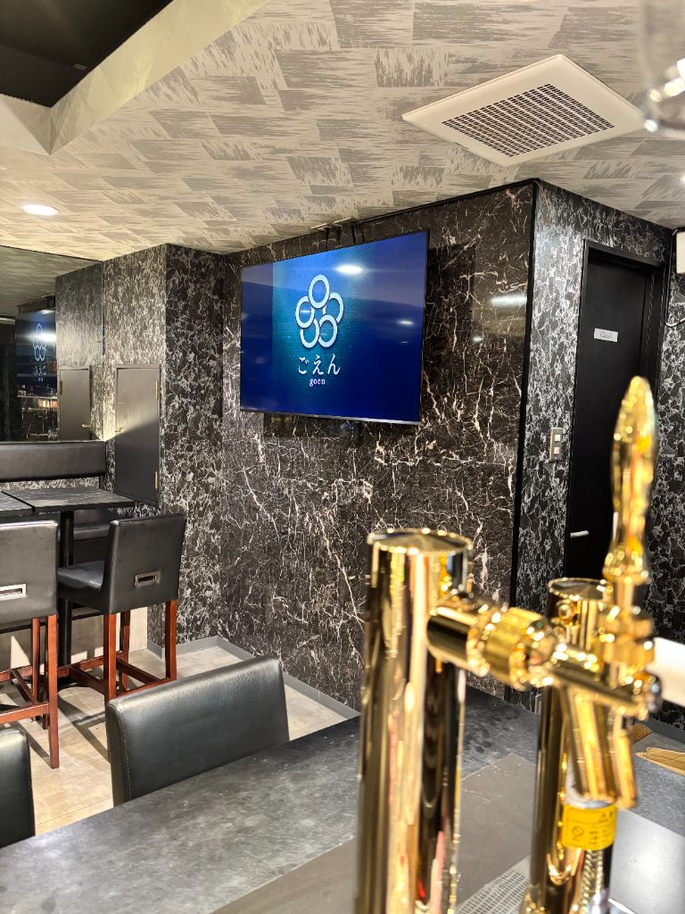
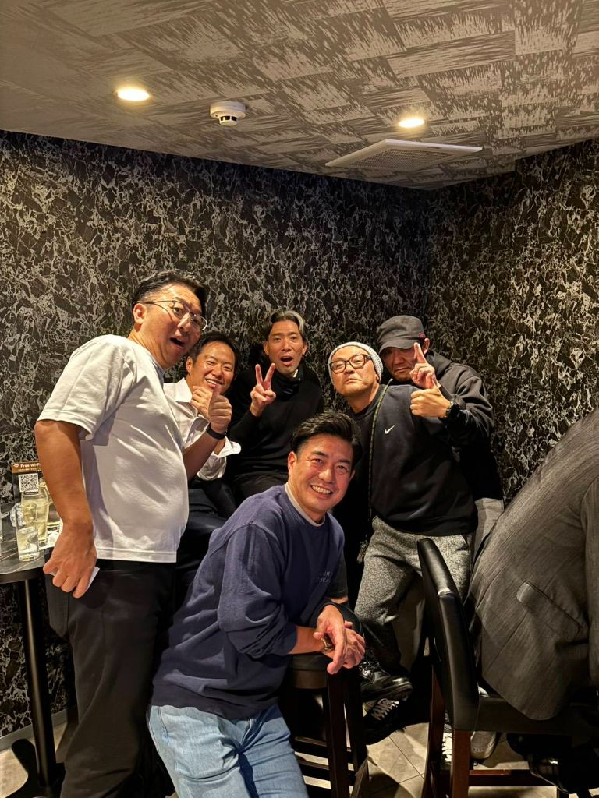
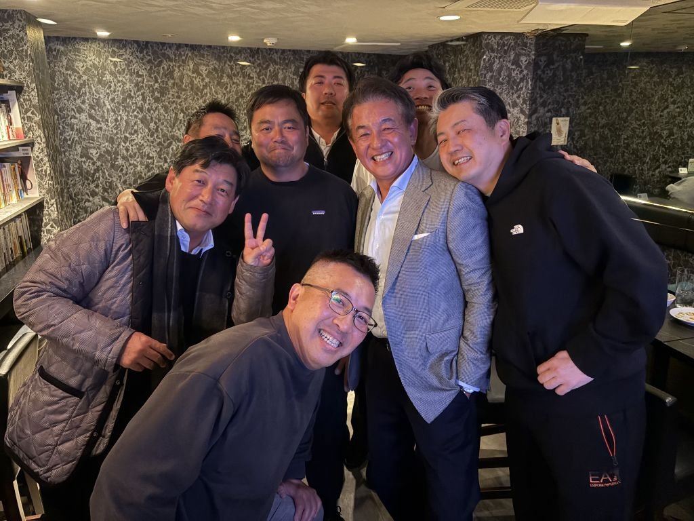

📷
BAR ごえん（銀座8丁目）― 大人が集い、縁が生まれる社交場


「ここでの一杯が、次のビジネスをつくる。
銀座に、そういうバーがある。」
銀座に、そういうバーがある。」
― FOOTBALL CONNECTION 編集部コメント
FOOTBALL CONNECTION MEMBER
立教大学Rushers OBの谷口真一氏（TSUMUGU合同会社 代表）が取締役として参画。
フットボールで叩き込まれた「準備・信頼・チームワーク」の哲学が、
この店の空気をつくっている。
🥂 このお店について
新橋駅から徒歩3分、銀座駅からも歩いてすぐ。
B1Fへ続く階段を降りると、照明が落ち着いたバーカウンターと
ゆったりとしたテーブル席が目に入る。
BAR ごえんの「ごえん」は、漢字で「御縁」。
店名の通り、初対面の人でも気づけば会話が弾み、
帰り際には名刺を交わしている——そんな夜が日常的に生まれる。
SPACE & CONNECTION
「縁」が生まれるレイアウトと空気感
カウンター席とテーブル席を組み合わせた設計は、
1人でも、グループでも、自然に話が広がる距離感を作る。
バーテンダーが場を読んで動くから、初めての訪問でも居心地がいい。
1人でも、グループでも、自然に話が広がる距離感を作る。
バーテンダーが場を読んで動くから、初めての訪問でも居心地がいい。
銀座8丁目という立地の品格
新橋・銀座というビジネスと大人の文化が交差するエリア。
「どこで飲むか」が相手への配慮になる場所で、
ごえんを選ぶことは間違いない選択になる。
「どこで飲むか」が相手への配慮になる場所で、
ごえんを選ぶことは間違いない選択になる。
ビジネスパーソン・経営者が集まる理由
常連の多くは経営者・管理職・士業など意思決定層。
「あそこに行けば誰かいる」という安心感が、
ゆるやかなネットワークを形成している。
「あそこに行けば誰かいる」という安心感が、
ゆるやかなネットワークを形成している。
✦ 店名「ごえん」の由来 ✦
ひとつは、人と人との「ご縁」。
もうひとつは、五円のように気軽に立ち寄れる距離感。
そして、少しのきっかけが大きなつながりに変わる——という意味も込めている。
BARごえんは、ただお酒を飲む場所ではなく、
人が集い、会話が生まれ、関係が広がっていく場所。
ここで生まれたご縁が、また次のご縁を呼んでいく。
もうひとつは、五円のように気軽に立ち寄れる距離感。
そして、少しのきっかけが大きなつながりに変わる——という意味も込めている。
BARごえんは、ただお酒を飲む場所ではなく、
人が集い、会話が生まれ、関係が広がっていく場所。
ここで生まれたご縁が、また次のご縁を呼んでいく。
✦ OWNER'S STORY ✦
「人と人がつながることで、新しい価値が生まれる。
これまでの仕事の中でも、そうした瞬間を何度も見てきました。
一人ではできないことも、
誰かと出会い、つながることで動き出す。
そのきっかけになる"場"を、自分でつくりたい。
そんな想いから、BARごえんを始めました。
ビジネスの話でも、趣味の話でもいい。
気軽に来て、話して、また次につながっていく——
そんな流れが自然に生まれる場所でありたいと思っています。」 ― 谷口真一（立教大学Rushers OB / TSUMUGU合同会社 代表）
これまでの仕事の中でも、そうした瞬間を何度も見てきました。
一人ではできないことも、
誰かと出会い、つながることで動き出す。
そのきっかけになる"場"を、自分でつくりたい。
そんな想いから、BARごえんを始めました。
ビジネスの話でも、趣味の話でもいい。
気軽に来て、話して、また次につながっていく——
そんな流れが自然に生まれる場所でありたいと思っています。」 ― 谷口真一（立教大学Rushers OB / TSUMUGU合同会社 代表）
🏈 アメフト関係者への一言
取締役の谷口真一氏は立教大学Rushers OB。
フィールドで培った「準備と信頼」の哲学をビジネスの場に持ち込み、
この店のカルチャーを形づくっている。
アメフト関係者として訪れれば、自然と話が広がるはずだ。
OB同士の懇親会の1軒目に、
試合後の打ち上げの締めに、
大切な人を紹介したい夜に——
「銀座でいいバーない？」と聞かれたら、迷わずごえんを答えてほしい。
📅 おすすめ利用シーン
懇親会・
交流会
交流会
接待・
会食後
会食後
二次会・
打ち上げ
打ち上げ
OB会・
同期会
同期会
観戦会・
イベント
イベント
銀座の夜
を刻む
を刻む
🎫 FOOTBALL CONNECTION 来店特典
「タッチダウン！」
来店時にスタッフへ合言葉をお伝えください。
ごえん特製カクテル 1杯無料
※おひとり様1回限り。他サービスとの併用不可。
📋 基本情報
| 🏪 店名 | BAR ごえん |
| 📍 エリア | 東京都中央区 銀座8丁目 |
| 🚉 最寄駅 | JR 新橋駅（徒歩3分）/ 東京メトロ 銀座駅（徒歩8分） |
| 🏠 住所 | 東京都中央区銀座8丁目2-15 明興ビルB1F |
| 📞 電話 | 03-6280-6388 |
| 🕐 営業時間 | 月・火 19:00〜翌0:00 水・木・金 19:00〜翌5:00 |
| 🗓️ 定休日 | 土曜・日曜 |
| 🍽️ ジャンル | バー・コミュニティバー |
| 🔗 公式サイト | bar.goencorp.jp |
| @goen_202507 | |
| 👤 参画メンバー | 谷口真一（立教大学Rushers OB・取締役） |